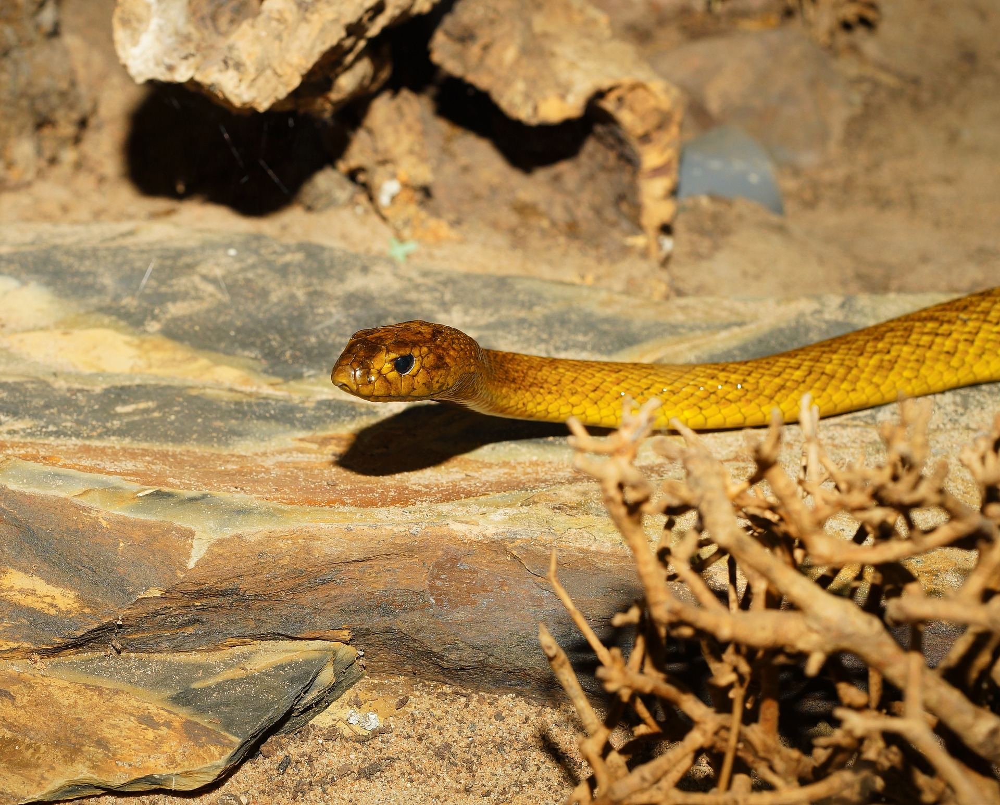

(백엔드 애들이 받아올 사용자 아이디)님 로그아웃

· 이름 : 내륙타이판(Inland taipan)
· 수명 : 평균 10년
· 크기 : 2.5m에서 4m
· 먹이 : 쥐나 밴디코트라는 호주 서식의 유대류 쥐
· 서식지 : 호주 내륙, 땅이나 바위의 갈라진 틈에 서식하지만 고산지대에도 분포
· 부연 설명 : 내륙타이판의 독성은 방울뱀의 200-400배 가량으로, 한번 물때 나오는 독의 양은
최대 100mg이다. 이는 쥐 이십 만 마리와 사람 수십 명을 죽일 수 있는 정도의 양이다. 그러나
성격이 대체로 온순한 편이고 조심성이 많아 일단 만난 상대를 피하려고 하기 때문에 작정하고
접근하고 자극하지 않는 한 피해는 없다. 겨울과 여름에 따라 색의 농도가 다르다.
· 수명 : 평균 10년
· 크기 : 2.5m에서 4m
· 먹이 : 쥐나 밴디코트라는 호주 서식의 유대류 쥐
· 서식지 : 호주 내륙, 땅이나 바위의 갈라진 틈에 서식하지만 고산지대에도 분포
· 부연 설명 : 내륙타이판의 독성은 방울뱀의 200-400배 가량으로, 한번 물때 나오는 독의 양은
최대 100mg이다. 이는 쥐 이십 만 마리와 사람 수십 명을 죽일 수 있는 정도의 양이다. 그러나
성격이 대체로 온순한 편이고 조심성이 많아 일단 만난 상대를 피하려고 하기 때문에 작정하고
접근하고 자극하지 않는 한 피해는 없다. 겨울과 여름에 따라 색의 농도가 다르다.